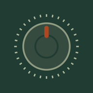
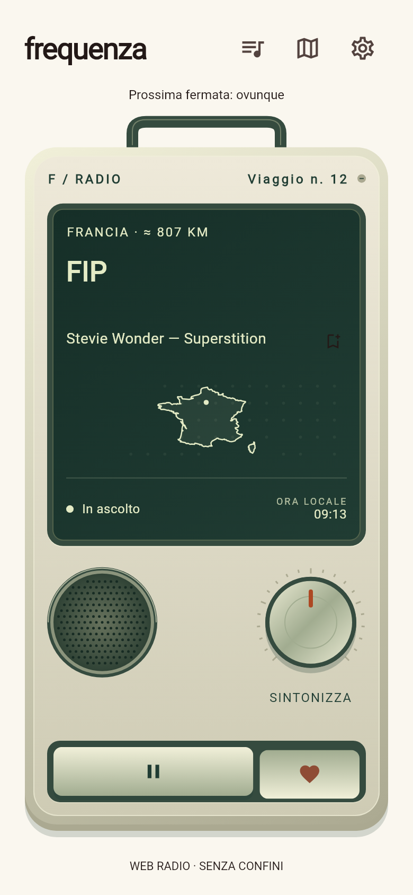
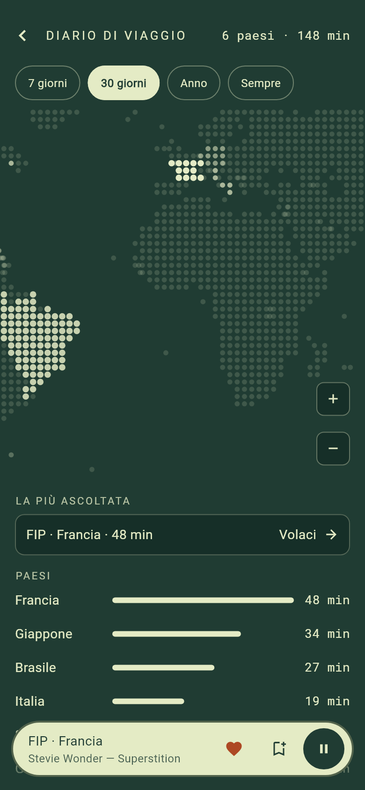

<!doctype html>
<html lang="it">
<meta charset="utf-8">
<title>Frequenza — anteprima del link</title>
<style>
  * { box-sizing: border-box; }
  body { margin: 0; width: 1200px; height: 630px; background: #FAF7EF; color: #213E34; font-family: system-ui, sans-serif; }
  main { height: 100%; display: flex; align-items: center; gap: 56px; padding: 52px 64px; }
  header { flex: 1; }
  header img { width: 88px; height: 88px; border-radius: 20px; }
  h1 { font-size: 68px; line-height: 1; letter-spacing: -3px; margin: 28px 0; }
  p { font-size: 29px; line-height: 1.4; margin: 0; max-width: 440px; }
  small { display: block; margin-top: 32px; color: #5E7060; font-size: 17px; letter-spacing: 2px; }
  .shots { display: flex; gap: 22px; align-items: center; }
  .shots img { width: 224px; height: auto; border-radius: 22px; box-shadow: 0 12px 32px #213E3426; }
</style>
<main>
  <header>
    
    <h1>frequenza</h1>
    <p>Gira la manopola.<br>Il mondo è in diretta.</p>
    <small>WEB RADIO · SENZA CONFINI</small>
  </header>
  <div class="shots">
    
    
  </div>
</main>
</html>
